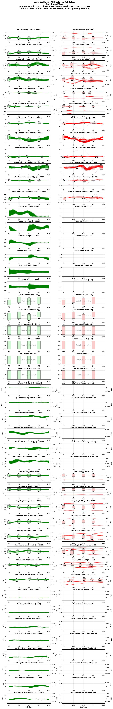

Gtech 2021
These files and reports use earlier conversions and have not yet been re-checked. Read the processing notes and recorded checks before analysis.
Overview
- Short Code: GT21
- Year: 2021
- Institution: Epic Lab
We introduce a novel dataset containing 3-dimensional biomechanical and wearable sensor data from 22 able-bodied adults for multiple locomotion modes (level-ground/treadmill walking, stair ascent/descent, and ramp ascent/descent) and multiple terrain conditions of each mode (walking speed, stair height, and ramp inclination). In this paper, we present the data collection methods, explain the structure of the open dataset, and report the sensor data along with the kinematic and kinetic profiles of joint biomechanics as a function of the gait phase. This dataset offers a comprehensive source of locomotion information for the same set of subjects to motivate applications in locomotion recognition, developments in robotic assistive devices, and improvement of biomimetic controllers that better adapt to terrain conditions. With such a dataset, models for these applications can be either subject-dependent or subject-independent, allowing greater flexibility for researchers to advance the field.
Downloads
Preview dataDataset Information
Subjects and Tasks
- Number of Subjects: 15
- Tasks Included: Decline Walking, Incline Walking, Level Walking, Stair Ascent, Stair Descent, Transition
Subject Metadata
15 rows
The table below summarizes the subject_metadata key:value pairs per subject.
| Subject | weight_kg | foot_length_m | shank_length_m | thigh_length_m |
|---|---|---|---|---|
| GT21_AB06 | 74.8 | 0.219 | 0.435 | 0.348 |
| GT21_AB07 | 55.3 | 0.205 | 0.390 | 0.277 |
| GT21_AB08 | 72.6 | 0.217 | 0.419 | 0.340 |
| GT21_AB09 | 63.5 | 0.190 | 0.364 | 0.322 |
| GT21_AB10 | 83.9 | 0.212 | 0.395 | 0.332 |
| GT21_AB11 | 77.1 | 0.211 | 0.408 | 0.331 |
| GT21_AB13 | 59.0 | 0.211 | 0.420 | 0.299 |
| GT21_AB14 | 58.4 | 0.187 | 0.364 | 0.254 |
| GT21_AB16 | 55.8 | 0.204 | 0.391 | 0.298 |
| GT21_AB18 | 60.1 | 0.199 | 0.429 | 0.301 |
| GT21_AB20 | 68.0 | 0.210 | 0.436 | 0.281 |
| GT21_AB21 | 58.1 | 0.194 | 0.390 | 0.279 |
| GT21_AB24 | 72.6 | 0.205 | 0.420 | 0.285 |
| GT21_AB25 | 52.2 | 0.190 | 0.390 | 0.281 |
| GT21_AB30 | 77.0 | 0.215 | 0.421 | 0.277 |
Task Catalog
87 rows
| Task | Task ID | Task Info |
|---|---|---|
| decline_walking | decline_-11.0deg | incline_deg:-11.0,surface:overground |
| decline_-12.4deg | incline_deg:-12.4,surface:overground | |
| decline_-18.0deg | incline_deg:-18.0,surface:overground | |
| decline_-5.2deg | incline_deg:-5.2,surface:overground | |
| decline_-7.8deg | incline_deg:-7.8,surface:overground | |
| decline_-9.2deg | incline_deg:-9.2,surface:overground | |
| incline_walking | incline_11.0deg | incline_deg:11.0,surface:overground |
| incline_12.4deg | incline_deg:12.4,surface:overground | |
| incline_18.0deg | incline_deg:18.0,surface:overground | |
| incline_5.2deg | incline_deg:5.2,surface:overground | |
| incline_7.8deg | incline_deg:7.8,surface:overground | |
| incline_9.2deg | incline_deg:9.2,surface:overground | |
| level_walking | level | speed_m_s:0.50,treadmill:true,surface:treadmill |
| speed_m_s:0.55,treadmill:true,surface:treadmill | ||
| speed_m_s:0.60,treadmill:true,surface:treadmill | ||
| speed_m_s:0.65,treadmill:true,surface:treadmill | ||
| speed_m_s:0.70,treadmill:true,surface:treadmill | ||
| speed_m_s:0.75,treadmill:true,surface:treadmill | ||
| speed_m_s:0.80,treadmill:true,surface:treadmill | ||
| speed_m_s:0.85,treadmill:true,surface:treadmill | ||
| speed_m_s:0.88,surface:overground | ||
| speed_m_s:0.90,treadmill:true,surface:treadmill | ||
| speed_m_s:0.95,treadmill:true,surface:treadmill | ||
| speed_m_s:1.00,treadmill:true,surface:treadmill | ||
| speed_m_s:1.05,treadmill:true,surface:treadmill | ||
| speed_m_s:1.10,treadmill:true,surface:treadmill | ||
| speed_m_s:1.15,treadmill:true,surface:treadmill | ||
| speed_m_s:1.17,surface:overground | ||
| speed_m_s:1.20,treadmill:true,surface:treadmill | ||
| speed_m_s:1.25,treadmill:true,surface:treadmill | ||
| speed_m_s:1.30,treadmill:true,surface:treadmill | ||
| speed_m_s:1.35,treadmill:true,surface:treadmill | ||
| speed_m_s:1.40,treadmill:true,surface:treadmill | ||
| speed_m_s:1.45,surface:overground | ||
| speed_m_s:1.45,treadmill:true,surface:treadmill | ||
| speed_m_s:1.50,treadmill:true,surface:treadmill | ||
| speed_m_s:1.55,treadmill:true,surface:treadmill | ||
| speed_m_s:1.60,treadmill:true,surface:treadmill | ||
| speed_m_s:1.65,treadmill:true,surface:treadmill | ||
| speed_m_s:1.70,treadmill:true,surface:treadmill | ||
| speed_m_s:1.75,treadmill:true,surface:treadmill | ||
| speed_m_s:1.80,treadmill:true,surface:treadmill | ||
| speed_m_s:1.85,treadmill:true,surface:treadmill | ||
| speed_m_s:1.90,treadmill:true,surface:treadmill | ||
| speed_m_s:1.95,treadmill:true,surface:treadmill | ||
| speed_m_s:2.00,treadmill:true,surface:treadmill | ||
| stair_ascent | stair_ascent | step_height_m:0.102,surface:stairs |
| step_height_m:0.127,surface:stairs | ||
| step_height_m:0.152,surface:stairs | ||
| step_height_m:0.178,surface:stairs | ||
| stair_descent | stair_descent | step_height_m:0.102,surface:stairs |
| step_height_m:0.127,surface:stairs | ||
| step_height_m:0.152,surface:stairs | ||
| step_height_m:0.178,surface:stairs | ||
| transition | ramp_ascent_to_walk | incline_deg:11.0,surface:overground,gait_transition:true,transition_from:incline_walking,transition_to:level_walking |
| incline_deg:12.4,surface:overground,gait_transition:true,transition_from:incline_walking,transition_to:level_walking | ||
| incline_deg:5.2,surface:overground,gait_transition:true,transition_from:incline_walking,transition_to:level_walking | ||
| incline_deg:7.8,surface:overground,gait_transition:true,transition_from:incline_walking,transition_to:level_walking | ||
| ramp_descent_to_walk | incline_deg:-11.0,surface:overground,gait_transition:true,transition_from:decline_walking,transition_to:level_walking | |
| incline_deg:-12.4,surface:overground,gait_transition:true,transition_from:decline_walking,transition_to:level_walking | ||
| incline_deg:-18.0,surface:overground,gait_transition:true,transition_from:decline_walking,transition_to:level_walking | ||
| incline_deg:-5.2,surface:overground,gait_transition:true,transition_from:decline_walking,transition_to:level_walking | ||
| incline_deg:-7.8,surface:overground,gait_transition:true,transition_from:decline_walking,transition_to:level_walking | ||
| incline_deg:-9.2,surface:overground,gait_transition:true,transition_from:decline_walking,transition_to:level_walking | ||
| stair_ascent_to_walk | step_height_m:0.102,surface:stairs,gait_transition:true,transition_from:stair_ascent,transition_to:level_walking | |
| step_height_m:0.127,surface:stairs,gait_transition:true,transition_from:stair_ascent,transition_to:level_walking | ||
| step_height_m:0.152,surface:stairs,gait_transition:true,transition_from:stair_ascent,transition_to:level_walking | ||
| step_height_m:0.178,surface:stairs,gait_transition:true,transition_from:stair_ascent,transition_to:level_walking | ||
| stair_descent_to_walk | step_height_m:0.102,surface:stairs,gait_transition:true,transition_from:stair_descent,transition_to:level_walking | |
| step_height_m:0.127,surface:stairs,gait_transition:true,transition_from:stair_descent,transition_to:level_walking | ||
| step_height_m:0.152,surface:stairs,gait_transition:true,transition_from:stair_descent,transition_to:level_walking | ||
| step_height_m:0.178,surface:stairs,gait_transition:true,transition_from:stair_descent,transition_to:level_walking | ||
| stand_to_walk | speed_m_s:1.17,surface:overground,gait_transition:true,transition_from:stand,transition_to:level_walking | |
| walk_to_ramp_ascent | incline_deg:11.0,surface:overground,gait_transition:true,transition_from:level_walking,transition_to:incline_walking | |
| incline_deg:12.4,surface:overground,gait_transition:true,transition_from:level_walking,transition_to:incline_walking | ||
| incline_deg:18.0,surface:overground,gait_transition:true,transition_from:level_walking,transition_to:incline_walking | ||
| walk_to_ramp_descent | incline_deg:-5.2,surface:overground,gait_transition:true,transition_from:level_walking,transition_to:decline_walking | |
| incline_deg:-7.8,surface:overground,gait_transition:true,transition_from:level_walking,transition_to:decline_walking | ||
| incline_deg:-9.2,surface:overground,gait_transition:true,transition_from:level_walking,transition_to:decline_walking | ||
| walk_to_stair_ascent | step_height_m:0.102,surface:stairs,gait_transition:true,transition_from:level_walking,transition_to:stair_ascent | |
| walk_to_stair_descent | step_height_m:0.102,surface:stairs,gait_transition:true,transition_from:level_walking,transition_to:stair_descent | |
| step_height_m:0.127,surface:stairs,gait_transition:true,transition_from:level_walking,transition_to:stair_descent | ||
| step_height_m:0.152,surface:stairs,gait_transition:true,transition_from:level_walking,transition_to:stair_descent | ||
| step_height_m:0.178,surface:stairs,gait_transition:true,transition_from:level_walking,transition_to:stair_descent | ||
| walk_to_stand | speed_m_s:0.88,surface:overground,gait_transition:true,transition_from:level_walking,transition_to:stand | |
| speed_m_s:1.17,surface:overground,gait_transition:true,transition_from:level_walking,transition_to:stand | ||
| speed_m_s:1.45,surface:overground,gait_transition:true,transition_from:level_walking,transition_to:stand |
Feature Availability by Task
Coverage computed from `gtech_2021_phase_clean.parquet`.
Ground Reaction Forces
6 rows
| Feature | Decline Walking | Incline Walking | Level Walking | Stair Ascent | Stair Descent | Transition |
|---|---|---|---|---|---|---|
grf_anterior_contra_BW |
✖ | ✖ | ≈ 86.70 | ✖ | ✖ | ✖ |
grf_anterior_ipsi_BW |
≈ 26.00 | ≈ 31.20 | ≈ 86.70 | ≈ 97.40 | ≈ 49.90 | ≈ 54.00 |
grf_lateral_contra_BW |
✖ | ✖ | ≈ 86.70 | ✖ | ✖ | ✖ |
grf_lateral_ipsi_BW |
≈ 26.00 | ≈ 31.20 | ≈ 86.70 | ≈ 97.40 | ≈ 49.90 | ≈ 54.00 |
grf_vertical_contra_BW |
✖ | ✖ | ≈ 86.70 | ✖ | ✖ | ✖ |
grf_vertical_ipsi_BW |
≈ 26.00 | ≈ 31.20 | ≈ 86.70 | ≈ 97.40 | ≈ 49.90 | ≈ 54.00 |
Joint Angles
14 rows
| Feature | Decline Walking | Incline Walking | Level Walking | Stair Ascent | Stair Descent | Transition |
|---|---|---|---|---|---|---|
ankle_dorsiflexion_angle_contra_rad |
✔ | ✔ | ✔ | ✔ | ✔ | ✔ |
ankle_dorsiflexion_angle_ipsi_rad |
✔ | ✔ | ✔ | ✔ | ✔ | ✔ |
foot_sagittal_angle_contra_rad |
✔ | ✔ | ✔ | ✔ | ✔ | ✔ |
foot_sagittal_angle_ipsi_rad |
✔ | ✔ | ✔ | ✔ | ✔ | ✔ |
hip_flexion_angle_contra_rad |
✔ | ✔ | ✔ | ✔ | ✔ | ✔ |
hip_flexion_angle_ipsi_rad |
✔ | ✔ | ✔ | ✔ | ✔ | ✔ |
knee_flexion_angle_contra_rad |
✔ | ✔ | ✔ | ✔ | ✔ | ✔ |
knee_flexion_angle_ipsi_rad |
✔ | ✔ | ✔ | ✔ | ✔ | ✔ |
pelvis_sagittal_angle_rad |
✔ | ✔ | ✔ | ✔ | ✔ | ✔ |
shank_sagittal_angle_contra_rad |
✔ | ✔ | ✔ | ✔ | ✔ | ✔ |
shank_sagittal_angle_ipsi_rad |
✔ | ✔ | ✔ | ✔ | ✔ | ✔ |
thigh_sagittal_angle_contra_rad |
✔ | ✔ | ✔ | ✔ | ✔ | ✔ |
thigh_sagittal_angle_ipsi_rad |
✔ | ✔ | ✔ | ✔ | ✔ | ✔ |
trunk_sagittal_angle_rad |
✔ | ✔ | ✔ | ✔ | ✔ | ✔ |
Joint Moments
6 rows
| Feature | Decline Walking | Incline Walking | Level Walking | Stair Ascent | Stair Descent | Transition |
|---|---|---|---|---|---|---|
ankle_dorsiflexion_moment_contra_Nm_kg |
≈ 58.20 | ≈ 58.70 | ≈ 92.90 | ≈ 40.00 | ≈ 70.80 | ≈ 90.30 |
ankle_dorsiflexion_moment_ipsi_Nm_kg |
≈ 58.80 | ≈ 58.60 | ≈ 93.30 | ≈ 98.50 | ≈ 72.70 | ≈ 96.30 |
hip_flexion_moment_contra_Nm_kg |
≈ 58.20 | ≈ 58.70 | ≈ 92.90 | ≈ 40.00 | ≈ 70.80 | ≈ 90.30 |
hip_flexion_moment_ipsi_Nm_kg |
≈ 58.80 | ≈ 58.60 | ≈ 93.30 | ≈ 98.50 | ≈ 72.70 | ≈ 96.30 |
knee_flexion_moment_contra_Nm_kg |
≈ 58.20 | ≈ 58.70 | ≈ 92.90 | ≈ 40.00 | ≈ 70.80 | ≈ 90.30 |
knee_flexion_moment_ipsi_Nm_kg |
≈ 58.80 | ≈ 58.60 | ≈ 93.30 | ≈ 98.50 | ≈ 72.70 | ≈ 96.30 |
Joint Velocities
14 rows
| Feature | Decline Walking | Incline Walking | Level Walking | Stair Ascent | Stair Descent | Transition |
|---|---|---|---|---|---|---|
ankle_dorsiflexion_velocity_contra_rad_s |
✔ | ✔ | ✔ | ✔ | ✔ | ✔ |
ankle_dorsiflexion_velocity_ipsi_rad_s |
✔ | ✔ | ✔ | ✔ | ✔ | ✔ |
foot_sagittal_velocity_contra_rad_s |
✔ | ✔ | ✔ | ✔ | ✔ | ✔ |
foot_sagittal_velocity_ipsi_rad_s |
✔ | ✔ | ✔ | ✔ | ✔ | ✔ |
hip_flexion_velocity_contra_rad_s |
✔ | ✔ | ✔ | ✔ | ✔ | ✔ |
hip_flexion_velocity_ipsi_rad_s |
✔ | ✔ | ✔ | ✔ | ✔ | ✔ |
knee_flexion_velocity_contra_rad_s |
✔ | ✔ | ✔ | ✔ | ✔ | ✔ |
knee_flexion_velocity_ipsi_rad_s |
✔ | ✔ | ✔ | ✔ | ✔ | ✔ |
pelvis_sagittal_velocity_rad_s |
✔ | ✔ | ✔ | ✔ | ✔ | ✔ |
shank_sagittal_velocity_contra_rad_s |
✔ | ✔ | ✔ | ✔ | ✔ | ✔ |
shank_sagittal_velocity_ipsi_rad_s |
✔ | ✔ | ✔ | ✔ | ✔ | ✔ |
thigh_sagittal_velocity_contra_rad_s |
✔ | ✔ | ✔ | ✔ | ✔ | ✔ |
thigh_sagittal_velocity_ipsi_rad_s |
✔ | ✔ | ✔ | ✔ | ✔ | ✔ |
trunk_sagittal_velocity_rad_s |
✔ | ✔ | ✔ | ✔ | ✔ | ✔ |
Other Features
6 rows
| Feature | Decline Walking | Incline Walking | Level Walking | Stair Ascent | Stair Descent | Transition |
|---|---|---|---|---|---|---|
cop_anterior_contra_m |
✖ | ✖ | ≈ 86.70 | ✖ | ✖ | ✖ |
cop_anterior_ipsi_m |
≈ 26.00 | ≈ 31.20 | ≈ 86.70 | ≈ 97.40 | ≈ 49.90 | ≈ 54.00 |
cop_lateral_contra_m |
✖ | ✖ | ≈ 86.70 | ✖ | ✖ | ✖ |
cop_lateral_ipsi_m |
≈ 26.00 | ≈ 31.20 | ≈ 86.70 | ≈ 97.40 | ≈ 49.90 | ≈ 54.00 |
cop_vertical_contra_m |
✖ | ✖ | ≈ 86.70 | ✖ | ✖ | ✖ |
cop_vertical_ipsi_m |
≈ 26.00 | ≈ 31.20 | ≈ 86.70 | ≈ 97.40 | ≈ 49.90 | ≈ 54.00 |
Data Structure
- Format: Phase-normalized (150 points per gait cycle)
- Sampling: Phase-indexed from 0-100%
- Variables: Standard biomechanical naming convention
Validation Snapshot
- Status: ⚠️ Partial (89.2%)
- Stride Pass Rate: 89.2%
- Validation Ranges: Download validation ranges (source: contributor_tools/validation_ranges/default_ranges.yaml)
- Detailed Report: View validation report
Citation
https://doi.org/10.1016/j.jbiomech.2021.110320
Collection Details
Protocol
Standard motion capture protocol was used.
Processing Notes
No additional notes.
Files Included
gtech_2021_phase_dirty.parquet— Phase-normalized dataset- Validation report
- Conversion script in
contributor_tools/conversion_scripts/gt21/
Generated by Dataset Submission Tool on 2026-01-09 09:59
Recorded checks
Historical assessment — unreviewed release. These preserved results predate the observation contract and may contain inconsistent counts. They are not a current quality certification. Use the dataset limitations and versioned release evidence when available.
Report generated: 2026-01-09 09:59
Status Summary
| Metric | Value |
|---|---|
| Stride Pass Rate | 89.2% |
| Total Strides | 19519 |
| Passing Strides | 17418 |
Summary
Status: ⚠️ PARTIAL (89.2% valid)
Total Strides: 19519
Passing Strides: 17418
Task Breakdown
| Task | Pass Rate | Status |
|---|---|---|
| Decline Walking | 68.5% | ❌ |
| Incline Walking | 65.3% | ❌ |
| Level Walking | 96.1% | ✅ |
| Stair Ascent | 86.6% | ⚠️ |
| Stair Descent | 96.0% | ✅ |
| Transition | 19.7% | ❌ |
Validation ranges snapshot embedded below.
Validation Ranges Snapshot
Download the YAML snapshot used for this validation: Download
Source ranges file: contributor_tools/validation_ranges/default_ranges.yaml
Validation Plots
VALIDATION_GALLERY_STARTDecline Walking
Incline Walking
Level Walking

Stair Ascent
Stair Descent
Transition
Generated from gtech_2021_phase_dirty.parquet on 2026-01-09 09:59